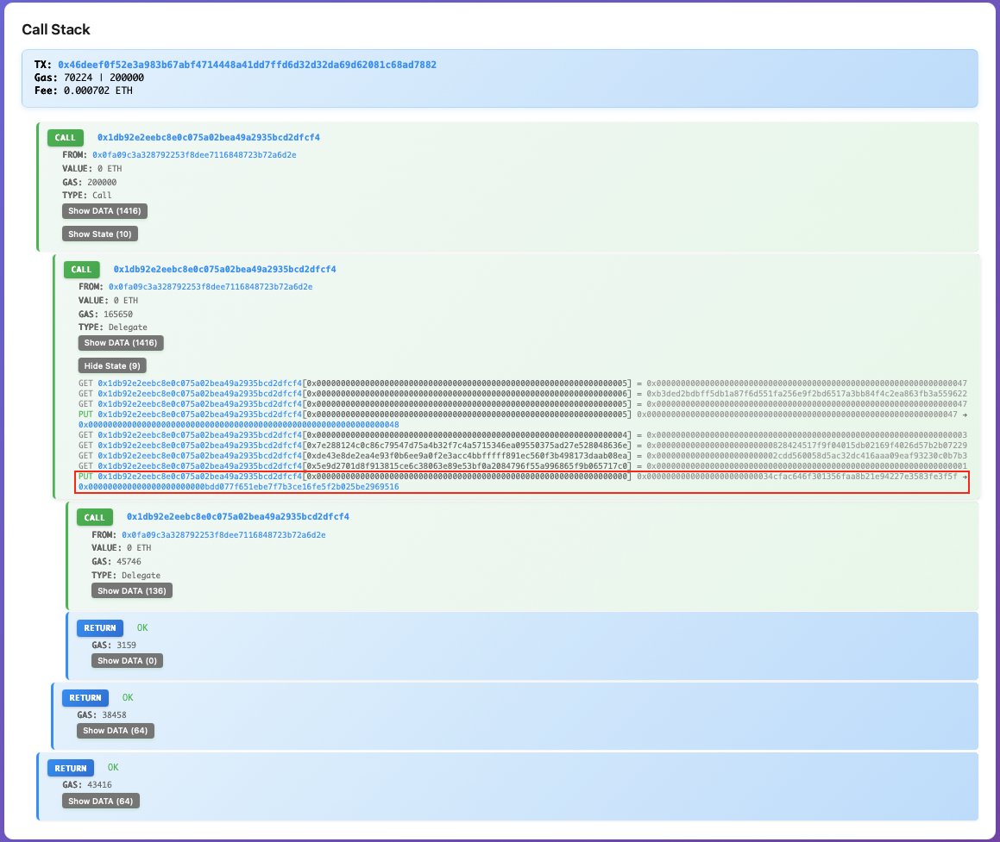
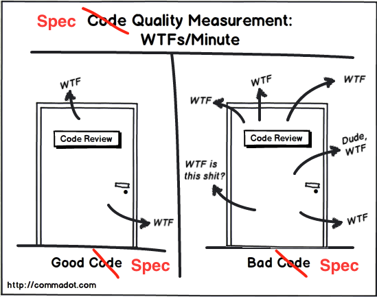
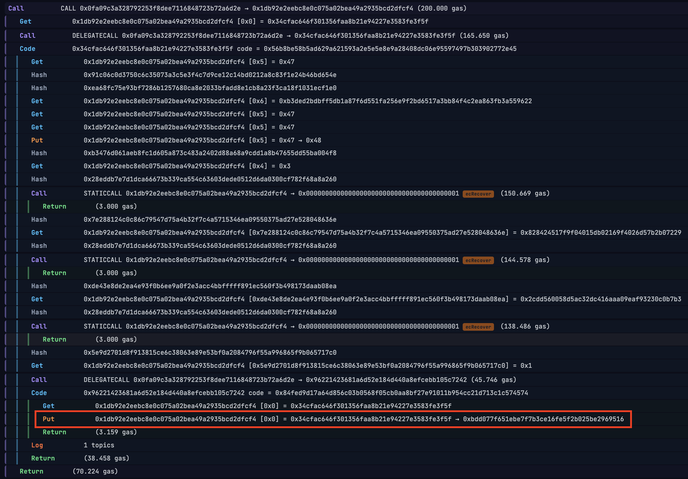
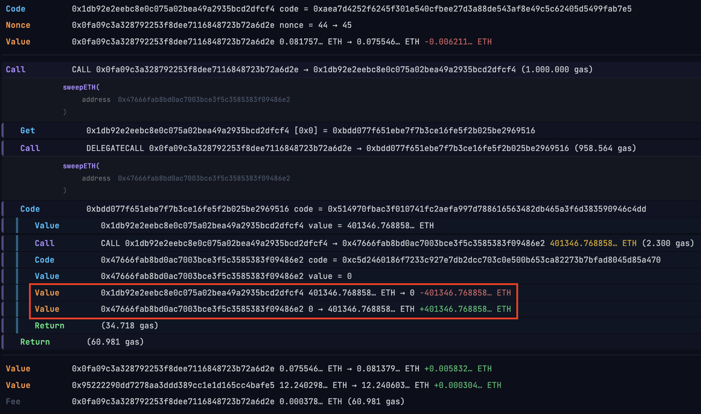

Solenoid YAEVMI
Lessons from Building an
Async-First, Wasm-Native EVM in Rust
Sergey Melnychuk · RustMeet 2026 · Kraków
⚠️ This talk is NOT about blockchain
It's about Rust — async, WebAssembly, and implementing a complex spec from scratch.
No crypto wallet required 🦀
Agenda
- About me
- Beerus → Solenoid → YAEVMI
- What? - EVM
- Why? - wasm, async, observability
- How? - spec, A/B, trial & error
- Solenoid
- YAEVMI
- Summary
- Q&A
About me
- 🌍 Based in Warsaw
- 💻 16+ years of software engineering
- 💪 Strong engineer
- 🏋️ Literally, 160kg deadlift
- 🦀 Programming in Rust since 2018
- 🔗 Curious about blockchain internals
- 🛠️ https://github.com/sergey-melnychuk
- 📝 https://sergey-melnychuk.github.io
Trifecta
| Project | Goal | Result |
|---|---|---|
| Beerus | StarkNet light client, ready for integration with wallets | Done. Used in ETH-STRK bridge. Now closed. |
| Solenoid | Observable async-first wasm-ready EVM from scratch | Done. Works too slow. Now archived. |
| YAEVMI | Observable and fast async + wasm EVM, learn from Solenoid | Done. It works. |
What? - EVM
YAEVMI
- Yet
- Another
- EVM
- Implementation
("YAV-mi" /ˈjævmi/)
What? - EVM
- Ethereum VM — the runtime for smart contracts
- Stack-based, 256-bit word, flat memory
- Deterministic: same (input, state) → same output
- Specified in the Yellow Paper and EIPs
Why build a new one in 2026?
Why? - wasm, async, observability
- Production EVMs (geth, revm, evmone) are hyper-optimized and hard to audit
- No clean wasm-native, async-friendly implementation existed
- Target: browser-based tooling — IDEs, light clients, simulations
- Goal: deep understanding of how EVM works "under the hood"
Why? - WebAssembly
- Runs in the browser — no backend, no install
wasm32-unknown-unknown: no OS, no stdlib- Same code runs natively and in the browser
- Portable simulation at the edge
- wallets
- IDEs
- light clients
Why? - async
- EVM needs external data: storage slots, account code, balances
- In the browser those fetches are always async (fetch, XHR)
- Sync EVM will fail to run in the browser (blocking the main thread)
- Async-first design makes the browser a first-class target
Why? - observability
- Production EVMs are black boxes — input in, output out
- Solenoid exposes every opcode, stack frame, memory write, storage access
- Useful for: debugging, education, security auditing, simulation UI
- Though full traces might be too much data to handle in browser effectively
Why? - security
- February 2025: $1.5B stolen from ByBit — largest crypto hack ever
- Root cause: malicious transaction looked safe in the UI, but wasn't
- A browser-native EVM could have simulated the full execution before signing
- Side effects, storage changes, token transfers — all visible before broadcast
Why? - security
ByBit hack: Impl Swap TX (21895238:116)

Why? - security
ByBit hack: Drain ETH TX (21895251:35)

How? - overview
- 📄 Spec — implement the Yellow Paper + EIPs faithfully
- ⚖️ A/B — compare step-by-step against revm
- 🔁 Trial & error — run real mainnet blocks, fix what breaks
How? - spec
- Yellow Paper is the ground truth — but it's dense and occasionally wrong
- EIPs override the Paper — and sometimes contradict each other
- Gas rules have many special cases:
SSTORE,CALL, warm/cold access - Ethereum GeneralStateTests: ~7000 test cases across all opcodes and EIPs
- Getting to 99%+ took fixing ~10 subtle bugs — each one a spec rabbit hole
How? - A/B against revm
- The revm trace is the source of truth*
- Run the same tx through YAEVMI and revm
- Compare every step: opcode, PC, gas, ...
- Step mismatch → implementations diverge
- Gas match + Trace match → peace of mind
How? - trial & error
- Replay real mainnet blocks — 10, then 100, then 300, then 1000
- Each milestone exposed new bugs: EIP-7623, EIP-7702, CREATE2 collision
- Failed txs go into a queue, get fixed, re-replayed
- 1000 consecutive blocks, zero failed transactions — that's the finish line
How? - ...
- 🤯 why would anyone send ETH to 0x0?
- 🙃 why is this address/cell cold/hot?
- 🫠 intrinsic gas is capped by floor
- 😠 refund is capped by constant factor
- 😩 63/64 rule for *CALL gas makes a mess
- 😵💫 revm offers very limited insights really
- 🤔 revert impl was tricky to debug
- ...
How? - ...
Designing and evolving such complex thing is hard

Solenoid: async-first design
- External calls (storage, code) are
asynctrait methods - Portable: compiles to
wasm32-unknown-unknown - Observable: every state transition is inspectable
// simplified
async fn execute(&mut self, opcode: u8) -> Result<()> {
match opcode {
SLOAD => {
let key = self.stack.pop()?;
let val = self.storage.load(key).await?; // async fetch
self.stack.push(val)
}
// ...
}
}
The async tax
- Each
.awaitis a yield point — overhead adds up - Codegen for deeply nested async is expensive
- Result: 10–100× slower than revm
But for browser use cases — latency hides the cost:
- Network round-trips dominate
- User doesn't notice 10ms vs 100ms
- Wasm portability is worth the tax
Solenoid: fun facts 🎉
- 🦄 UniSwap quoter was first external call
📊 QuoterV2 Results:
💰 Amount Out: 1 WETH for 3943.532812 USDC
📊 Price After (WETH/USDC): 3955.222269012662
🎯 Initialized Ticks Crossed: 1
⛽ Gas Estimate: 84919
✅ Transaction executed successfully!
🔄 Reverted: false
⛽ Gas used: 123290
Lessons learned from Solenoid
- The Yellow Paper has many subtle edge cases
- Gas accounting is hard (looking at you
SSTORE) - Debug info is very expensive — allocator round-trips add up fast in a hot loop
- Async in hot paths is still very expensive
- Key insight: the VM yields at every
.await— what if it didn't?
YAEVMI: make yield part of the design
- Solenoid yields to the executor on async fetches
- YAEVMI returns fetch request, sync execution
- Execution and fetching are decoupled:
- opcode handler is sync (no
.awaits) - executor is
async(handles fetches) - but deals with "pending" side-effects
YAEVMI: model
pub struct Call {...} // from, to, gas, data, value
pub enum HaltReason {...} // out-of-gas, out-of-memory, ...
pub enum CallMode {...} // call, static, delegate, callcode, create, create2
pub enum Fetch {...} // code, nonce, balance, account, block, state
pub enum EvmYield {
Return(Vec<u8>),
Revert(Vec<u8>),
Halt(HaltReason),
Call(Call, CallMode),
Fetch(Fetch),
}
pub type EvmResult<T> = std::result::Result<T, EvmYield>
YAEVMI: dispatch
pub fn dispatch<S: State>(
op: u8,
evm: &mut Evm,
ctx: &Context,
call: &Call,
state: &mut S) -> EvmResult<()> {
match op {
0x00 => basic::stop(evm),
// ...
0x31 => chain::balance(evm, ctx, call, state),
// ...
0xFF => calls::selfdestruct(evm, ctx, call, state),
_ => invalid(evm, ctx, call, state),
}
}
YAEVMI: BALANCE handler
pub fn balance<S: State>(evm: &mut Evm, state: &mut S) -> EvmResult<()> {
evm.gas_charge(100)?;
let [acc] = evm.peek()?;
let acc: Acc = acc.to();
let Some(balance) = state.balance(&acc) else {
return Err(EvmYield::Fetch(Fetch::Balance(acc)));
};
if state.warm_acc(&acc) {
evm.gas_charge(2_500)?;
}
evm.push(balance)?;
Ok(())
}
YAEVMI: BALANCE handler
pub fn balance<S: State>(evm: &mut Evm, state: &mut S) -> EvmResult<()> {
evm.gas_charge(100)?;
let [acc] = evm.peek()?;
let acc: Acc = acc.to();
let Some(balance) = state.balance(&acc) else {
return Err(EvmYield::Fetch(Fetch::Balance(acc)));
};
if state.warm_acc(&acc) {
evm.gas_charge(2_500)?;
}
evm.push(balance)?;
Ok(())
}
YAEVMI: BALANCE handler
pub fn balance<S: State>(evm: &mut Evm, state: &mut S) -> EvmResult<()> {
evm.gas_charge(100)?; // state change needs to be reverted on fetch
let [acc] = evm.peek()?; // state change needs to be reverted on fetch
let acc: Acc = acc.to();
let Some(balance) = state.balance(&acc) else {
return Err(EvmYield::Fetch(Fetch::Balance(acc)));
};
if state.warm_acc(&acc) {
evm.gas_charge(2_500)?;
}
evm.push(balance)?;
Ok(())
}
YAEVMI: pending state
Opcode handler:
- stores pending state changes
- applies them on success
- reverts them on fetch
YAEVMI: streaming traces
- Solenoid collected full per-opcode traces in memory → 55GB for Aztec rollup txs
- yaevmi emits trace events as a stream — consumer decides what to keep
- Same observable design, zero memory blowup
- Verified for 5M+ gas transactions with 100k+ steps
YAEVMI: streaming
- Same code works natively and in browser
- Non-blocking without sync primitives
- Needs explicit yields to reduce memory pressure
- 🤔
YAEVMI: streaming
futures::channel::mpscFTW!- See sieve for more details
YAEVMI: results
- 99%+ of Ethereum GeneralStateTests (Cancun fork) passing
- not the case for Osaka fork (current one)
- 1300+ mainnet blocks replayed — zero failed transactions
- Comparable to revm performance on modern hardware
- Seamlessly builds for
wasm32-unknown-unknowntarget - minor code tweaks were still necessary
YAEVMI: benchmarks
2 random blocks from mainnet
- B1: Block 24929490 (373 txs, 32 466 055 gas)
- B2: Block 24929491 (74 txs, 20 653 399 gas)
- B3: Block 25000000 (377 txs, 33 774 715 gas)
AVG time (ms) to execute full block:
| Host | B1 | B2 | B3 |
|---|---|---|---|
| MacBook Pro M1 | 77 | 45 | 43 |
| Intel NUC i7-1260P | 81 | 51 | 50 |
| [some cloud provider] | 130 | 81 | 80 |
YAEVMI in the browser
Live demo: simulate a random mainnet transaction
YAEVMI in the browser
ByBit hack: Impl Swap TX (21895238:116)

YAEVMI in the browser
ByBit hack: Drain ETH TX (21895251:35)

When to choose "simple & async" over "complex & fast"
- Education — readable vs micro-optimized code
- Prototyping — understand the spec deeply
- Light clients — correctness over throughput
- Browser tooling — wasm is non-negotiable
Key takeaways
- Async + Wasm is a valid architectural choice 🦀
- The async tax is real and will bite if unmanaged 😵
- Follow the spec (if you have one and it is good) 🙄
- A/B testing against revm was totally worth it 💯
Learn more
Q&A
Thank you!